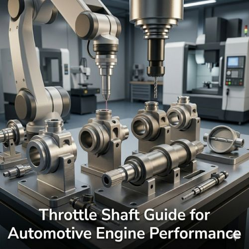

A throttle shaft guide is a precision-engineered component used in the throttle bodies of internal combustion engines — its primary role being to support and stabilize the throttle shaft as it rotates to control airflow into the engine. Acting as a bearing surface, the guide keeps the shaft centered, reduces friction between the shaft and throttle body housing, and prevents excessive wear. Even minor wobbling or misalignment leads to uneven airflow, reducing engine efficiency, increasing fuel consumption, and impacting performance. Without a properly functioning throttle shaft guide, engines experience throttle sticking, inconsistent idling, and poor acceleration response — making its precision critical to the entire engine control system.
In modern vehicles with electronic throttle control systems, this accuracy becomes even more essential — precise mechanical components like the throttle shaft guide directly determine the reliability of sensor readings and control signals that govern engine behavior.
When the throttle shaft moves without resistance, the throttle plate opens and closes precisely as demanded — delivering better acceleration, fuel economy, and stable idling. Poor-quality or worn guides create uneven throttle plate movement, causing engine hesitation, higher emissions, and increased wear on surrounding components. Material selection is equally critical: metallic guides in brass, stainless steel, or aluminum alloys provide excellent durability and heat resistance for engines under high temperatures and continuous load; polymeric guides reinforced with PTFE offer low friction and good wear resistance while reducing lubrication requirements. The right material depends on engine design, operating temperature, and expected service lifespan.
Production begins with appropriate material selection, followed by CNC machining or specialized molding to achieve exact required dimensions. Finishing processes — grinding, polishing, or heat treatment — enhance surface smoothness and durability. Precision inspection using coordinate measuring machines and surface profilometers verifies tolerances, roundness, and surface finish at micron-level accuracy, since any deviation compromises engine performance. This rigorous quality process ensures each guide supports smooth throttle shaft operation, reduces mechanical wear, improves fuel efficiency, and aligns with modern environmental emissions standards — delivering long-term engine reliability and sustainability.
Throttle shaft guides are used across passenger vehicles, commercial trucks, high-performance sports cars, motorcycles, marine engines, and small industrial machinery — wherever accurate throttle control and stable idling are essential. As automotive technology advances, electric throttle control systems, hybrid engines, and high-performance combustion engines are all driving demand for more precise and durable guide designs. Advanced materials, low-friction coatings, and enhanced manufacturing processes are being adopted to meet increasingly stringent global environmental and safety standards — ensuring throttle shaft guides continue supporting engine efficiency and emission control into the future.
Attri Tech Machines Pvt. Ltd. is recognized globally as a leading manufacturer and exporter of precision-engineered throttle shaft guides for automotive and industrial applications. With advanced manufacturing capabilities, skilled engineering teams, careful material selection, and rigorous quality control, the company produces components that deliver smooth operation, durability, and consistency — supporting better engine performance, longer operational life, and improved vehicle efficiency for industries around the world.
View Product Details at Attri Tech Machines